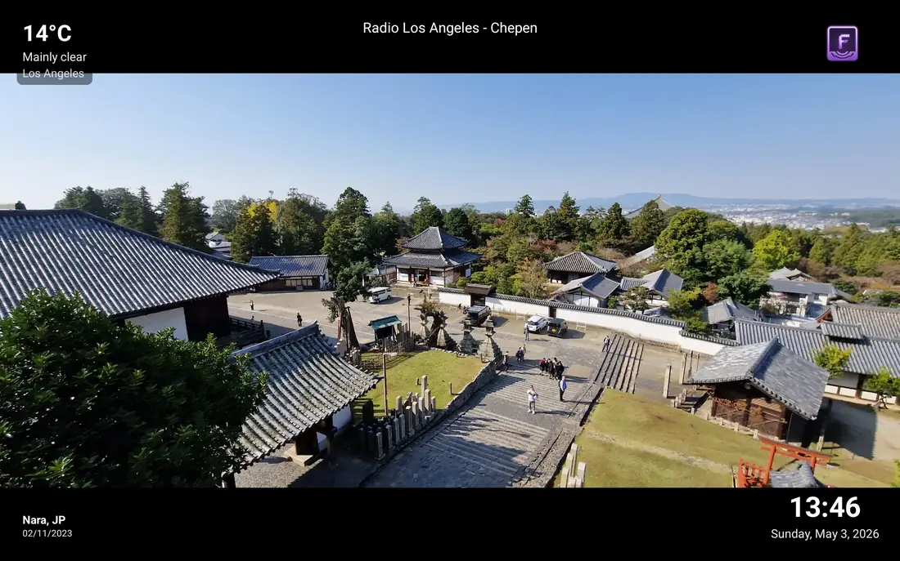
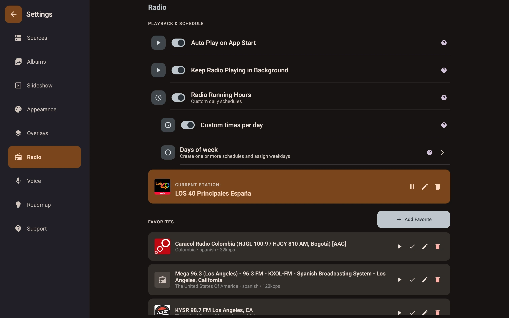
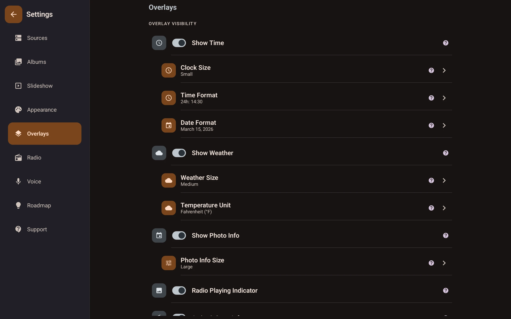
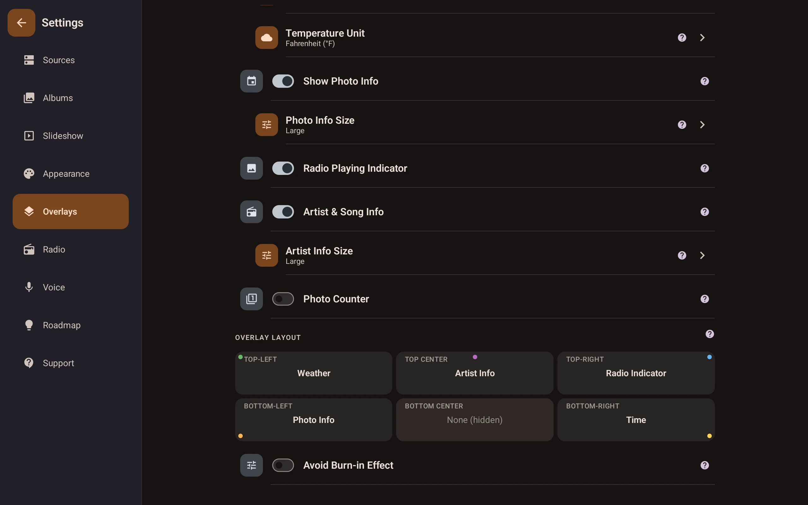
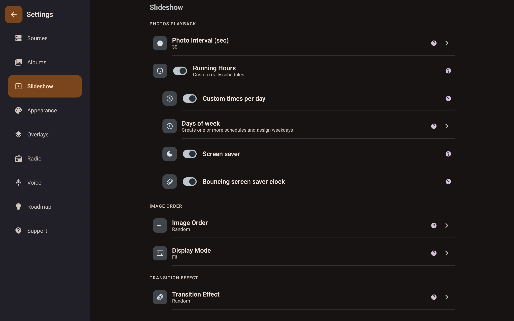
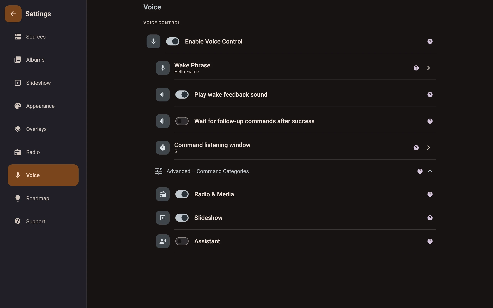

<script type="application/ld+json">
  {
    "@context": "https://schema.org",
    "@graph": [
      {
        "@type": "Organization",
        "name": "Fravora",
        "url": "https://fravora.app/",
        "logo": "https://fravora.app/images/fravora.png",
        "contactPoint": {
          "@type": "ContactPoint",
          "contactType": "customer support",
          "email": "aniujual.dev@yahoo.com"
        }
      },
      {
        "@type": "SoftwareApplication",
        "name": "Fravora: Digital Photo Frame",
        "applicationCategory": "MultimediaApplication",
        "operatingSystem": "Android",
        "description": "Android digital photo frame app with offline local folder and NAS/SMB slideshows, plus Google Photos, OneDrive, Dropbox, and Immich cloud sources, radio, weather overlays, and voice control.",
        "featureList": [
          "NAS and SMB network share support with outage recovery",
          "Offline local folder slideshow with no internet required",
          "Google Photos, OneDrive, Dropbox, and Immich cloud sources",
          "Video playback alongside photos (MOV, MP4, MKV)",
          "Internet radio with now-playing overlay",
          "Local music playlists from device or NAS storage",
          "Live weather overlay with full hourly and 7-day forecast",
          "In-app calendar with event reminders and glow alerts",
          "Smart scheduling with running hours and standby modes",
          "Voice control with on-device wake-word detection",
          "Cinematic effects: Ken Burns, Drift, Vignette Pulse",
          "OLED burn-in protection with bouncing clock and overlay micro-shifts",
          "Android TV, Google TV, and Amazon Fire TV support"
        ],
        "url": "https://fravora.app/",
        "sameAs": [
          "https://play.google.com/store/apps/details?id=com.aniujual.fravora",
          "https://www.amazon.com/dp/B0H45FCGX6"
        ],
        "image": "https://fravora.app/images/screen_frame1.webp",
        "downloadUrl": "https://play.google.com/store/apps/details?id=com.aniujual.fravora",
        "installUrl": "https://play.google.com/store/apps/details?id=com.aniujual.fravora",
        "offers": {
          "@type": "Offer",
          "price": "0",
          "priceCurrency": "USD",
          "availability": "https://schema.org/InStock"
        },
        "author": {
          "@type": "Person",
          "name": "aniujual"
        }
      },
      {
        "@type": "FAQPage",
        "mainEntity": [
          {
            "@type": "Question",
            "name": "Does Fravora support Google Photos slideshows?",
            "acceptedAnswer": {
              "@type": "Answer",
              "text": "Yes. Fravora supports Google Photos alongside local folders, SMB/NAS shares, Microsoft OneDrive, Dropbox, and Immich, so you're never limited to one photo source."
            }
          },
          {
            "@type": "Question",
            "name": "Does it show ads?",
            "acceptedAnswer": {
              "@type": "Answer",
              "text": "Only if you choose to. New users get a one-time 1-hour Pro trial, and free users can optionally watch rewarded ads for temporary Pro access - the slideshow itself is never interrupted."
            }
          },
          {
            "@type": "Question",
            "name": "Can I show weather and audio on top of my photos?",
            "acceptedAnswer": {
              "@type": "Answer",
              "text": "Yes. Fravora can display live weather, a clock, photo metadata, and now-playing audio information over your slideshow."
            }
          },
          {
            "@type": "Question",
            "name": "Does it work offline?",
            "acceptedAnswer": {
              "@type": "Answer",
              "text": "Yes. Local and SMB/NAS sources work without internet. Scheduling and screen saver behavior continue as configured."
            }
          },
          {
            "@type": "Question",
            "name": "Does Fravora work as a NAS photo frame without internet?",
            "acceptedAnswer": {
              "@type": "Answer",
              "text": "Yes. Fravora works as an offline NAS photo frame when using local folders or SMB/NAS sources on your local network. Internet is only needed for cloud sources and online services like radio."
            }
          },
          {
            "@type": "Question",
            "name": "Does it support SMB / NAS?",
            "acceptedAnswer": {
              "@type": "Answer",
              "text": "Yes, on the free tier. Enter your share credentials in the app and pick which folders to include."
            }
          },
          {
            "@type": "Question",
            "name": "Will my photos be uploaded anywhere?",
            "acceptedAnswer": {
              "@type": "Answer",
              "text": "No. Photos are read from your local or SMB/NAS sources and are not uploaded to Fravora servers."
            }
          },
          {
            "@type": "Question",
            "name": "Why is voice control a Pro feature?",
            "acceptedAnswer": {
              "@type": "Answer",
              "text": "Voice control uses Android speech recognition services that require ongoing maintenance, and keeping it in Pro helps sustain the free tier without forced slideshow ads."
            }
          },
          {
            "@type": "Question",
            "name": "What devices does it run on?",
            "acceptedAnswer": {
              "@type": "Answer",
              "text": "Fravora runs on Android tablets and dedicated Android display devices, and it works well for mounted or docked always-on frame setups."
            }
          },
          {
            "@type": "Question",
            "name": "How do I turn my tablet into a digital photo frame?",
            "acceptedAnswer": {
              "@type": "Answer",
              "text": "Install Fravora, complete first-launch onboarding to set sources and your first album, tune slideshow settings, dock your tablet, and enable always-on display behavior."
            }
          },
          {
            "@type": "Question",
            "name": "Is there a voice-controlled photo frame app?",
            "acceptedAnswer": {
              "@type": "Answer",
              "text": "Yes. Fravora supports wake phrase and voice commands so you can control slideshow and audio without touching the screen."
            }
          },
          {
            "@type": "Question",
            "name": "Can I use an old Android tablet as a photo frame?",
            "acceptedAnswer": {
              "@type": "Answer",
              "text": "Absolutely. Older Android tablets work well as dedicated frame displays, especially with Fravora offline playback and scheduling."
            }
          },
          {
            "@type": "Question",
            "name": "Does Fravora work with Synology or QNAP NAS?",
            "acceptedAnswer": {
              "@type": "Answer",
              "text": "Yes. Fravora connects to Synology and QNAP NAS over standard SMB shares so photos can stay on your local network while the slideshow runs offline."
            }
          },
          {
            "@type": "Question",
            "name": "What's the best free digital photo frame app for Android?",
            "acceptedAnswer": {
              "@type": "Answer",
              "text": "If you want a free Android photo frame app with no forced slideshow ads, offline playback, and NAS support, Fravora's free tier is designed for that use case."
            }
          },
          {
            "@type": "Question",
            "name": "Can I turn a Fire tablet into a photo frame with Fravora?",
            "acceptedAnswer": {
              "@type": "Answer",
              "text": "Yes, on compatible Amazon Fire tablets. Fravora can run as a dedicated photo frame display with local folders, NAS/SMB sources, and scheduled playback."
            }
          },
          {
            "@type": "Question",
            "name": "Do I need a cloud subscription to use Fravora?",
            "acceptedAnswer": {
              "@type": "Answer",
              "text": "No. Fravora works as an offline digital photo frame using local folders and SMB/NAS shares, so you can run it without a cloud subscription."
            }
          }
        ]
      }
    ]
  }
</script>

<!-- HERO -->
<section class="hero">
  <div class="orb orb1"></div>
  <div class="orb orb2"></div>
  <div class="orb orb3"></div>
  <div class="hero-content">
    <div class="hero-badge"><span>●</span> Android App</div>
    <picture>
      <source srcset="images/fravora.webp" type="image/webp" />
      
    </picture>
    <h1>Fravora: <em>Digital Photo Frame</em><br />for Android devices</h1>
    <p class="hero-sub">
      Turn any Android device into a smart digital photo frame with offline slideshow and video playback from local folders, NAS/SMB shares, and cloud sources like Google Photos, Microsoft OneDrive, Dropbox, and Immich.
      Add built-in radio and a dedicated Music tab with folder-based playlists, live weather, a full-screen calendar with reminders, and voice control — no subscription required, no forced slideshow ads.
      Works great on tablets, phones, Fire tablets, TVs, and other display devices, with full Synology and QNAP NAS support.
    </p>
    <div class="cta-group">
      <a class="cta-btn store-cta" href="https://play.google.com/store/apps/details?id=com.aniujual.fravora" target="_blank" rel="noopener">
        <svg viewBox="0 0 24 24" fill="currentColor"><path d="M3.18 23.76a2 2 0 0 0 2.14-.21l12.44-7.19-3.13-3.12-11.45 10.52zM20.65 9.22l-3.34-1.93-3.51 3.5 3.51 3.51 3.37-1.95a2 2 0 0 0-.03-3.13zM1 1.45A2 2 0 0 0 .5 2.87v18.27a2 2 0 0 0 .5 1.41L14.4 12 1 1.45zm13.39 9.14L2.82.38A2 2 0 0 0 1 .17L14.39 10.59l.01-4z"/></svg>
        Get it on Google Play
      </a>
      <a class="cta-btn store-cta" href="https://www.amazon.com/dp/B0H45FCGX6" target="_blank" rel="noopener">
        <svg viewBox="0 0 24 24" fill="currentColor" aria-hidden="true"><path d="M6 7.25A2.25 2.25 0 0 1 8.25 5h7.5A2.25 2.25 0 0 1 18 7.25V9h.75A1.25 1.25 0 0 1 20 10.25v7.5A2.25 2.25 0 0 1 17.75 20h-11.5A2.25 2.25 0 0 1 4 17.75v-7.5A1.25 1.25 0 0 1 5.25 9H6V7.25zm1.5 0V9h9V7.25a.75.75 0 0 0-.75-.75h-7.5a.75.75 0 0 0-.75.75zm-2 3.25v7.25c0 .414.336.75.75.75h11.5a.75.75 0 0 0 .75-.75V10.5H5.5z"/></svg>
        Get it on Amazon Appstore
      </a>
    </div>
    <div class="hero-trust" aria-label="Trust highlights">
      <span>No forced ads</span>
      <span>Photos stay local</span>
      <span>NAS/SMB support</span>
      <span>Works offline</span>
    </div>
  </div>
</section>

<main>
<section class="intent-copy" aria-label="Why people choose Fravora">
  <p class="section-label">Why people choose Fravora</p>
  <div class="copy-card">
    <p>Fravora is an Android digital photo frame app for people who want to repurpose an existing Android device instead of buying another screen. It is built for always-on home displays, kitchen counters, wall-mounted tablets, repurposed phones, Fire tablets, and dedicated smart frame setups where reliability matters more than social features. Many users land here after testing frame apps that interrupt slideshows with ads, hide useful settings behind subscriptions, or require uploading personal photos to a third-party cloud.</p>
    <p>With Fravora, you can mix local folders, SMB network shares from Synology and QNAP NAS devices, and cloud sources like Google Photos in one slideshow, and keep an offline photo frame running even when internet drops. You also get built-in audio, live weather, clock and metadata overlays, hidden photo controls, and optional voice commands, while keeping your photos under your control.</p>
  </div>
</section>

<!-- SEO KEYWORD BLOCKS -->
<section class="seo-sections">
  <p class="section-label">Search-friendly answers</p>
  <h2 class="section-title">Built for the way people search</h2>
  <div class="grid">
    <article>
      <h2>Best digital photo frame app</h2>
      <p>Fravora is designed as an appliance-style frame app: local-first photos, no forced ads, no subscription requirement, and schedule-based playback for always-on screens. It works with local folders, NAS/SMB shares, Google Photos, and other supported cloud sources.</p>
    </article>
    <article>
      <h2>Google Photos slideshow app for Android</h2>
      <p>Use Google Photos as one of your slideshow sources alongside local folders and SMB/NAS shares. Fravora is built for users who want cloud convenience without losing local-first options.</p>
    </article>
    <article>
      <h2>Voice-controlled slideshow app</h2>
      <p>Use wake phrase and voice commands to manage slideshow and audio hands-free. Fravora keeps the screen clean while still giving you direct control across the room.</p>
    </article>
    <article>
      <h2>Offline photo viewer for Android</h2>
      <p>Fravora runs fully offline when using local folders or SMB/NAS on your network. That makes it ideal for privacy-focused setups and homes with unstable internet.</p>
    </article>
    <article>
      <h2>Smart photo frame alternative</h2>
      <p>Instead of buying dedicated hardware, repurpose the Android tablet, Fire tablet, or Android display device you already own. Fravora gives you smart overlays, scheduling, and reliable playback in one app.</p>
    </article>
  </div>
  <div class="seo-links" aria-label="Fravora internal links">
    <a href="features.html">Explore features</a>
    <a href="privacy.html">Read privacy policy</a>
    <a href="how-it-works.html">See how it works</a>
    <a href="download.html">Download Fravora</a>
    <a href="blog/nas-music-frame-android.html">NAS music guide</a>
    <a href="blog/fire-tablet-smart-calendar.html">Fire tablet guide</a>
    <a href="blog/google-photos-digital-photo-frame.html">Google Photos guide</a>
    <a href="blog/immich-photo-frame-android.html">Immich photo frame guide</a>
    <a href="blog/self-hosted-photo-frame-immich-smb.html">Self-hosted guide</a>
  </div>
</section>

<!-- SOCIAL PROOF (New Section) -->
<section class="different user-reviews">
  <p class="section-label">User Feedback</p>
  <h2 class="section-title">What users are saying</h2>
  <div class="copy-card">
    <div class="grid">
      <article>
        <div class="diff-icon">⭐</div>
        <div>
          <h4>"This app turned my phone into a beautiful digital photo frame!"</h4>
          <p>It's easy to set up, runs smoothly, and displays my favorite photos in great quality. I love the simple interface and the customization options.</p>
          <p class="review-meta">Posted Jul 24, 2026 · <a href="https://play.google.com/store/apps/details?id=com.aniujual.fravora" target="_blank" rel="noopener">Google Play review</a></p>
        </div>
      </article>
      <article>
        <div class="diff-icon">⭐</div>
        <div>
          <h4>"Very good app... easy to setup... loading times are instant."</h4>
          <p>It has all you need to set up a photo rolling device while also being able to listen to radio, and you can use any folder you want.</p>
          <p class="review-meta">Posted Jul 18, 2026 · <a href="https://play.google.com/store/apps/details?id=com.aniujual.fravora" target="_blank" rel="noopener">Google Play review</a></p>
        </div>
      </article>
      <article>
        <div class="diff-icon">⭐</div>
        <div>
          <h4>"I use it on an old Samsung Galaxy Tab and it is PERFECT!"</h4>
          <p>The commands work flawlessly and photos are displayed perfectly, which makes older tablets great dedicated frame devices.</p>
          <p class="review-meta">Posted Jul 18, 2026 · <a href="https://play.google.com/store/apps/details?id=com.aniujual.fravora" target="_blank" rel="noopener">Google Play review</a></p>
        </div>
      </article>
      <article>
        <div class="diff-icon">⭐</div>
        <div>
          <h4>"Easy to use, works smoothly, and displays my photos beautifully."</h4>
          <p>The interface is clean and intuitive and setup took just a few minutes. Great for turning an Android device into a reliable digital photo frame.</p>
          <p class="review-meta">Posted Jun 27, 2026 · <a href="https://play.google.com/store/apps/details?id=com.aniujual.fravora" target="_blank" rel="noopener">Google Play review</a></p>
        </div>
      </article>
    </div>
  </div>
</section>

<!-- FRAME SHOWCASE -->
<section class="frame-showcase">
  <div class="showcase-inner">
    <p class="section-label">See it in action</p>
    <h2 class="section-title">Your memories, beautifully framed</h2>

    <div class="tv-mockup-wrap">
      <div class="tv-frame">
        <div class="tv-screen">
          
        </div>
      </div>
      <div class="tv-stand"></div>
      <div class="tv-base"></div>
    </div>

    <div class="frame-dots">
      <button class="frame-dot active" data-idx="0" aria-label="Frame photo 1"></button>
      <button class="frame-dot" data-idx="1" aria-label="Frame photo 2"></button>
    </div>
    <p class="frame-caption" id="frameCaption">Nara, Japan — weather overlay, clock, and now-playing audio info all in one glance</p>
  </div>
</section>

<!-- BLOG TEASERS -->
<section class="blog-teasers">
  <div class="blog-inner">
    <p class="section-label">From the blog</p>
    <h2 class="section-title">Guides for repurposing Android devices</h2>
    <div class="blog-grid">
      <a class="blog-card" href="blog/nas-music-frame-android.html">
        <h3>Build a high-performance NAS music frame</h3>
        <p>Learn how to sync your Synology or QNAP music library to an Android frame with high-fidelity playback and sync tools.</p>
      </a>
      <a class="blog-card" href="blog/fire-tablet-smart-calendar.html">
        <h3>Fire tablets as smart home calendars</h3>
        <p>Turn a Fire tablet into an always-on kitchen dashboard with reminders, visual alerts, and photo slideshows.</p>
      </a>
      <a class="blog-card" href="blog/self-hosted-photo-frame-immich-smb.html">
        <h3>Self-hosted: Immich vs. Local SMB</h3>
        <p>Which private photo source is right for your DIY frame? Comparing API-based sync vs. direct file sharing.</p>
      </a>
    </div>
    <p class="blog-more"><a href="blog/index.html">View all articles →</a></p>
  </div>
</section>

<!-- SETTINGS SCREENSHOTS -->
<section class="screenshots-section">
  <p class="section-label">Full control</p>
  <h2 class="section-title">Every detail, your way</h2>

  <div class="screenshots-tabs" role="tablist" aria-label="Fravora settings tabs">
    <button class="tab-btn active" data-tab="radio" role="tab" aria-label="Show radio settings" aria-selected="true">📻 Radio</button>
    <button class="tab-btn" data-tab="overlays" role="tab" aria-label="Show overlay settings" aria-selected="false">🌤️ Overlays</button>
    <button class="tab-btn" data-tab="layout" role="tab" aria-label="Show overlay layout settings" aria-selected="false">🗂️ Overlay Layout</button>
    <button class="tab-btn" data-tab="slideshow" role="tab" aria-label="Show slideshow settings" aria-selected="false">🖼️ Slideshow</button>
    <button class="tab-btn" data-tab="voice" role="tab" aria-label="Show voice settings" aria-selected="false">🎙️ Voice</button>
  </div>

  <div class="screenshots-stage">

    <div class="screenshot-panel active" id="tab-radio">
      <div class="tablet-mockup">
        <div class="tablet-screen">
          
        </div>
      </div>
      <div class="screenshot-desc">
        <h3>Radio & favourites</h3>
        <p>Save favourite stations, schedule when radio plays each day, and keep music going in the background — all in one place.</p>
      </div>
    </div>

    <div class="screenshot-panel" id="tab-overlays">
      <div class="tablet-mockup">
        <div class="tablet-screen">
          
        </div>
      </div>
      <div class="screenshot-desc">
        <h3>Overlay visibility</h3>
        <p>Toggle weather, clock, photo metadata, and now-playing info individually. Choose exact sizes for each element.</p>
      </div>
    </div>

    <div class="screenshot-panel" id="tab-layout">
      <div class="tablet-mockup">
        <div class="tablet-screen">
          
        </div>
      </div>
      <div class="screenshot-desc">
        <h3>Overlay layout</h3>
        <p>Assign weather, clock, metadata, and ambient logo across a 2x2 corner grid with collision-safe swaps and optional hide states.</p>
      </div>
    </div>

    <div class="screenshot-panel" id="tab-slideshow">
      <div class="tablet-mockup">
        <div class="tablet-screen">
          
        </div>
      </div>
      <div class="screenshot-desc">
        <h3>Slideshow & scheduling</h3>
        <p>Set photo intervals, display mode, transition effects, and running hours with per-day schedules. Set it once and forget it.</p>
      </div>
    </div>

    <div class="screenshot-panel" id="tab-voice">
      <div class="tablet-mockup">
        <div class="tablet-screen">
          
        </div>
      </div>
      <div class="screenshot-desc">
        <h3>Voice control</h3>
        <p>Wake phrase detection runs on-device; command recognition uses Android speech recognition. Tune the listening window and enable radio, slideshow, or assistant categories.</p>
      </div>
    </div>

  </div>
</section>

<!-- FEATURES -->
<section class="features">
  <p class="section-label">What it does</p>
  <h2 class="section-title">Everything your idle screen deserves</h2>
  <div class="feature-grid">
    <div class="feature-card">
      <span class="feature-icon">🖼️</span>
      <h3>Smart Slideshow</h3>
      <p>Mix local folders, SMB/NAS shares, and cloud providers (Google Photos, OneDrive, Dropbox, Immich) in one slideshow. Supports videos with per-album audio policies (Mute, Duck, or Play).</p>
      <a class="feature-link" href="manual.html#slideshow">Open manual chapter →</a>
    </div>
    <div class="feature-card">
      <span class="feature-icon">🎥</span>
      <h3>Video Playback</h3>
      <p>Play videos alongside photos in the same album rotation. Supports MOV, MP4, MKV, and more, with per-album audio policy controls.</p>
      <a class="feature-link" href="features.html">See all features →</a>
    </div>
    <div class="feature-card">
      <span class="feature-icon">📻</span>
      <h3>Built-in Audio</h3>
      <p>Use a dedicated Radio and Music tab to stream internet stations or play folder-based local playlists while your photos and videos run. Station and track info show in the now-playing overlay.</p>
      <a class="feature-link" href="manual.html#audio">Open manual chapter →</a>
    </div>
    <div class="feature-card">
      <span class="feature-icon">🌤️</span>
      <h3>Weather Overlay</h3>
      <p>Live local weather at a glance, right on your frame, alongside clock and photo info overlays. No extra device needed.</p>
      <a class="feature-link" href="manual.html#weather-forecast">Open manual chapter →</a>
    </div>
    <div class="feature-card">
      <span class="feature-icon">🎙️</span>
      <h3>Voice Control</h3>
      <p>Wake-phrase detection runs on-device with OpenWakeWord; command recognition uses Android SpeechRecognizer with clear visual feedback.</p>
      <a class="feature-link" href="manual.html#voice">Open manual chapter →</a>
    </div>
    <div class="feature-card">
      <span class="feature-icon">📍</span>
      <h3>Metadata Overlay</h3>
      <p>Date and location pulled from EXIF — privately, locally, beautifully.</p>
      <a class="feature-link" href="manual.html#overlays">Open manual chapter →</a>
    </div>
    <div class="feature-card">
      <span class="feature-icon">⏰</span>
      <h3>Smart Scheduling</h3>
      <p>The frame turns on and off on your schedule. Set it once, forget it.</p>
      <a class="feature-link" href="manual.html#slideshow">Open manual chapter →</a>
    </div>
    <div class="feature-card">
      <span class="feature-icon">📅</span>
      <h3>Calendar (Pro)</h3>
      <p>Tap the clock/date overlay to open a full-screen calendar with events, recurrence, and reminders.</p>
      <a class="feature-link" href="manual.html#calendar">Open manual chapter →</a>
    </div>
    <div class="feature-card">
      <span class="feature-icon">☁️</span>
      <h3>Cloud Sources</h3>
      <p>Supported cloud sources: Google Photos, Microsoft OneDrive, Dropbox, and Immich. Free includes 1 cloud connection with base limits; Pro expands cloud limits across all supported cloud providers.</p>
      <a class="feature-link" href="manual.html#sources">Open manual chapter →</a>
    </div>
    <div class="feature-card">
      <span class="feature-icon">🙈</span>
      <h3>Hidden Photos</h3>
      <p>Hide photos per album or globally without deleting. Unhide anytime.</p>
      <a class="feature-link" href="manual.html#albums">Open manual chapter →</a>
    </div>
  </div>
</section>

<!-- WHAT MAKES FRAVORA DIFFERENT -->
<section class="different">
  <p class="section-label">Why Fravora</p>
  <h2 class="section-title">Built to stay out of your way</h2>
  <div class="grid">
    <article>
      <div class="diff-icon">🚫</div>
      <div>
        <h4>No forced ads</h4>
        <p>Watch one voluntarily for Pro time. Your slideshow is never interrupted.</p>
      </div>
    </article>
    <article>
      <div class="diff-icon">📡</div>
      <div>
        <h4>Works offline</h4>
        <p>Local and SMB sources need no internet. Your frame keeps running.</p>
      </div>
    </article>
    <article>
      <div class="diff-icon">🔐</div>
      <div>
        <h4>Your photos stay yours</h4>
        <p>Nothing uploaded. Credentials encrypted locally. Nothing sold.</p>
      </div>
    </article>
    <article>
      <div class="diff-icon">⚡</div>
      <div>
        <h4>Appliance-grade reliability</h4>
        <p>Runs 24/7 unattended. Set it up once — it just works.</p>
      </div>
    </article>
    <article>
      <div class="diff-icon">☁️</div>
      <div>
        <h4>Local + NAS, one frame</h4>
        <p>Mix local folders and SMB/NAS in a single setup.</p>
      </div>
    </article>
    <article>
      <div class="diff-icon">🎛️</div>
      <div>
        <h4>No subscription pressure</h4>
        <p>Free tier is genuinely usable, and Pro is a one-time upgrade when you want more.</p>
      </div>
    </article>
  </div>
</section>

<!-- COMPARISON TABLE -->
<section class="comparison">
  <p class="section-label">Plans</p>
  <h2 class="section-title">Free to start, Pro when you're ready</h2>
  <div class="comp-wrap">
    <table class="comp-table">
      <thead>
        <tr>
          <th>Feature</th>
          <th>Free</th>
          <th class="pro-col">Pro</th>
        </tr>
      </thead>
      <tbody>
        <tr class="section-row"><td colspan="3">Photo Sources</td></tr>
        <tr><td class="feature-name">Local &amp; SMB / NAS folders</td><td><span class="check">✓</span></td><td><span class="check">✓</span></td></tr>
        <tr><td class="feature-name">Video playback in albums (MOV, MP4, MKV)</td><td><span class="check">✓</span></td><td><span class="check">✓</span></td></tr>
        <tr><td class="feature-name">Cloud sources (Google Photos, OneDrive, Dropbox, Immich)</td><td>1 cloud connection + base limits</td><td>Expanded cloud limits and provider scope</td></tr>
        <tr><td class="feature-name">Subfolders &amp; expanded limits</td><td><span class="cross">—</span></td><td><span class="check">✓</span></td></tr>
        <tr class="section-row"><td colspan="3">Slideshow</td></tr>
        <tr><td class="feature-name">Uninterrupted slideshow + scheduling</td><td><span class="check">✓</span></td><td><span class="check">✓</span></td></tr>
        <tr><td class="feature-name">Smart Shuffle, transitions &amp; speed control</td><td><span class="cross">—</span></td><td><span class="check">✓</span></td></tr>
        <tr><td class="feature-name">Image backdrop style (Fit mode)</td><td><span class="cross">—</span></td><td><span class="check">✓</span></td></tr>
        <tr><td class="feature-name">New images overlay badge &amp; viewer</td><td><span class="check">✓</span></td><td><span class="check">✓</span></td></tr>
        <tr class="section-row"><td colspan="3">Audio</td></tr>
        <tr><td class="feature-name">Radio &amp; Music streaming (local and SMB/NAS)</td><td><span class="check">✓</span></td><td><span class="check">✓</span></td></tr>
        <tr><td class="feature-name">Playlist limit &amp; Deduplication</td><td>1 playlist (Dedupe always ON)</td><td>Unlimited playlists (Configurable)</td></tr>
        <tr><td class="feature-name">Favorites, background playback &amp; scheduling</td><td><span class="cross">—</span></td><td><span class="check">✓</span></td></tr>
        <tr><td class="feature-name">Lockscreen &amp; notification controls</td><td><span class="cross">—</span></td><td><span class="check">✓</span></td></tr>
        <tr class="section-row"><td colspan="3">Overlays</td></tr>
        <tr><td class="feature-name">Clock overlay (positioning &amp; formats)</td><td>Fixed position (Small/Med/Large)</td><td>Custom grid &amp; time/date formats</td></tr>
        <tr><td class="feature-name">Weather, metadata &amp; now playing</td><td><span class="cross">—</span></td><td><span class="check">✓</span></td></tr>
        <tr><td class="feature-name">Full-screen weather forecast (24h/7d)</td><td><span class="cross">—</span></td><td><span class="check">✓</span></td></tr>
        <tr><td class="feature-name">OLED anti-burn-in &amp; bouncing clock</td><td><span class="cross">—</span></td><td><span class="check">✓</span></td></tr>
        <tr><td class="feature-name">Calendar overlay, events &amp; reminders</td><td><span class="cross">—</span></td><td><span class="check">✓</span></td></tr>
        <tr><td class="feature-name">Android/Google TV &amp; Fire TV support</td><td><span class="check">✓</span></td><td><span class="check">✓</span></td></tr>
        <tr class="section-row"><td colspan="3">Controls &amp; Pro</td></tr>
        <tr><td class="feature-name">Voice control</td><td><span class="cross">—</span></td><td><span class="check">✓</span></td></tr>
        <tr><td class="feature-name">Assistant volume voice commands</td><td><span class="cross">—</span></td><td><span class="check">✓</span></td></tr>
        <tr><td class="feature-name">One-time starter trial + optional ad unlock</td><td><span class="check">✓</span></td><td><span class="cross">—</span></td></tr>
        <tr><td class="feature-name">One-time Pro purchase</td><td><span class="cross">—</span></td><td><span class="check">✓</span></td></tr>
      </tbody>
    </table>
  </div>
</section>

<!-- FOUNDER'S NOTE -->
<section class="founder">
  <div class="founder-inner">
    <p class="section-label">From the developer</p>
    <p class="founder-quote">
      I built Fravora because every other frame app I tried interrupted my slideshow with paywalls, forced ads, or required a cloud subscription just to show photos from my own NAS. I wanted something that felt like an appliance — reliable, respectful, and beautiful. So I made it.
    </p>
    <p class="founder-sig">
      aniujual
      <small>Solo developer, Fravora</small>
    </p>
  </div>
</section>

<!-- FAQ -->
<section class="faq">
  <p class="section-label">FAQ</p>
  <h2 class="section-title">Common questions</h2>
  <div class="faq-list">
    <div class="faq-item">
      <button class="faq-q" aria-expanded="false" aria-controls="faq-answer-1">
        Does Fravora support Google Photos slideshows?
        <svg class="chevron" viewBox="0 0 24 24" fill="none" stroke="currentColor" stroke-width="2"><polyline points="6 9 12 15 18 9"/></svg>
      </button>
      <div class="faq-a" id="faq-answer-1">Yes. Fravora supports Google Photos alongside local folders, SMB/NAS shares, Microsoft OneDrive, Dropbox, and Immich, so you're never limited to one photo source.</div>
    </div>
    <div class="faq-item">
      <button class="faq-q" aria-expanded="false" aria-controls="faq-answer-2">
        Does it show ads?
        <svg class="chevron" viewBox="0 0 24 24" fill="none" stroke="currentColor" stroke-width="2"><polyline points="6 9 12 15 18 9"/></svg>
      </button>
      <div class="faq-a" id="faq-answer-2">Only if you choose to. New users get a one-time 1-hour Pro trial, and free users can optionally watch rewarded ads for temporary Pro access. The slideshow itself is never interrupted.</div>
    </div>
    <div class="faq-item">
      <button class="faq-q" aria-expanded="false" aria-controls="faq-answer-3">
        Can I show weather and audio on top of my photos?
        <svg class="chevron" viewBox="0 0 24 24" fill="none" stroke="currentColor" stroke-width="2"><polyline points="6 9 12 15 18 9"/></svg>
      </button>
      <div class="faq-a" id="faq-answer-3">Yes. Fravora can display live weather, a clock, photo metadata, and now-playing audio information over your slideshow.</div>
    </div>
    <div class="faq-item">
      <button class="faq-q" aria-expanded="false" aria-controls="faq-answer-4">
        Does it work offline?
        <svg class="chevron" viewBox="0 0 24 24" fill="none" stroke="currentColor" stroke-width="2"><polyline points="6 9 12 15 18 9"/></svg>
      </button>
      <div class="faq-a" id="faq-answer-4">Yes. Local and SMB/NAS sources work without internet. Scheduling and screen saver behavior continue as configured.</div>
    </div>
    <div class="faq-item">
      <button class="faq-q" aria-expanded="false" aria-controls="faq-answer-5">
        Does Fravora work as a NAS photo frame without internet?
        <svg class="chevron" viewBox="0 0 24 24" fill="none" stroke="currentColor" stroke-width="2"><polyline points="6 9 12 15 18 9"/></svg>
      </button>
      <div class="faq-a" id="faq-answer-5">Yes. Fravora works as an offline NAS photo frame when using local folders or SMB/NAS sources on your local network. Internet is only needed for cloud sources and online services like radio.</div>
    </div>
    <div class="faq-item">
      <button class="faq-q" aria-expanded="false" aria-controls="faq-answer-6">
        Does it support SMB / NAS?
        <svg class="chevron" viewBox="0 0 24 24" fill="none" stroke="currentColor" stroke-width="2"><polyline points="6 9 12 15 18 9"/></svg>
      </button>
      <div class="faq-a" id="faq-answer-6">Yes, on the free tier. Enter your share credentials in the app and pick which folders to include.</div>
    </div>
    <div class="faq-item">
      <button class="faq-q" aria-expanded="false" aria-controls="faq-answer-7">
        Will my photos be uploaded anywhere?
        <svg class="chevron" viewBox="0 0 24 24" fill="none" stroke="currentColor" stroke-width="2"><polyline points="6 9 12 15 18 9"/></svg>
      </button>
      <div class="faq-a" id="faq-answer-7">No. Photos are read from your local or SMB/NAS sources and are not uploaded to Fravora servers.</div>
    </div>
    <div class="faq-item">
      <button class="faq-q" aria-expanded="false" aria-controls="faq-answer-8">
        Why is voice control a Pro feature?
        <svg class="chevron" viewBox="0 0 24 24" fill="none" stroke="currentColor" stroke-width="2"><polyline points="6 9 12 15 18 9"/></svg>
      </button>
      <div class="faq-a" id="faq-answer-8">Voice control uses Android speech recognition services that require ongoing maintenance, and keeping it in Pro helps sustain the free tier without forced slideshow ads.</div>
    </div>
    <div class="faq-item">
      <button class="faq-q" aria-expanded="false" aria-controls="faq-answer-9">
        What devices does it run on?
        <svg class="chevron" viewBox="0 0 24 24" fill="none" stroke="currentColor" stroke-width="2"><polyline points="6 9 12 15 18 9"/></svg>
      </button>
      <div class="faq-a" id="faq-answer-9">Fravora runs on Android tablets and dedicated Android display devices, and it works well for mounted or docked always-on frame setups.</div>
    </div>
    <div class="faq-item">
      <button class="faq-q" aria-expanded="false" aria-controls="faq-answer-10">
        How do I turn my tablet into a digital photo frame?
        <svg class="chevron" viewBox="0 0 24 24" fill="none" stroke="currentColor" stroke-width="2"><polyline points="6 9 12 15 18 9"/></svg>
      </button>
      <div class="faq-a" id="faq-answer-10">Install Fravora, complete first-launch onboarding to set sources and your first album, tune slideshow settings, dock your tablet, and enable always-on display behavior.</div>
    </div>
    <div class="faq-item">
      <button class="faq-q" aria-expanded="false" aria-controls="faq-answer-11">
        Is there a voice-controlled photo frame app?
        <svg class="chevron" viewBox="0 0 24 24" fill="none" stroke="currentColor" stroke-width="2"><polyline points="6 9 12 15 18 9"/></svg>
      </button>
      <div class="faq-a" id="faq-answer-11">Yes. Fravora supports wake phrase and voice commands so you can control slideshow and audio without touching the screen.</div>
    </div>
    <div class="faq-item">
      <button class="faq-q" aria-expanded="false" aria-controls="faq-answer-12">
        Can I use an old Android tablet as a photo frame?
        <svg class="chevron" viewBox="0 0 24 24" fill="none" stroke="currentColor" stroke-width="2"><polyline points="6 9 12 15 18 9"/></svg>
      </button>
      <div class="faq-a" id="faq-answer-12">Absolutely. Older Android tablets work well as dedicated frame displays, especially with Fravora offline playback and scheduling.</div>
    </div>
    <div class="faq-item">
      <button class="faq-q" aria-expanded="false" aria-controls="faq-answer-13">
        Does Fravora work with Synology or QNAP NAS?
        <svg class="chevron" viewBox="0 0 24 24" fill="none" stroke="currentColor" stroke-width="2"><polyline points="6 9 12 15 18 9"/></svg>
      </button>
      <div class="faq-a" id="faq-answer-13">Yes. Fravora connects to Synology and QNAP NAS over standard SMB shares so photos can stay on your local network while the slideshow runs offline.</div>
    </div>
    <div class="faq-item">
      <button class="faq-q" aria-expanded="false" aria-controls="faq-answer-14">
        What's the best free digital photo frame app for Android?
        <svg class="chevron" viewBox="0 0 24 24" fill="none" stroke="currentColor" stroke-width="2"><polyline points="6 9 12 15 18 9"/></svg>
      </button>
      <div class="faq-a" id="faq-answer-14">If you want a free Android photo frame app with no forced slideshow ads, offline playback, and NAS support, Fravora's free tier is designed for that use case.</div>
    </div>
    <div class="faq-item">
      <button class="faq-q" aria-expanded="false" aria-controls="faq-answer-15">
        Can I turn a Fire tablet into a photo frame with Fravora?
        <svg class="chevron" viewBox="0 0 24 24" fill="none" stroke="currentColor" stroke-width="2"><polyline points="6 9 12 15 18 9"/></svg>
      </button>
      <div class="faq-a" id="faq-answer-15">Yes, on compatible Amazon Fire tablets. Fravora can run as a dedicated photo frame display with local folders, NAS/SMB sources, and scheduled playback.</div>
    </div>
    <div class="faq-item">
      <button class="faq-q" aria-expanded="false" aria-controls="faq-answer-16">
        Do I need a cloud subscription to use Fravora?
        <svg class="chevron" viewBox="0 0 24 24" fill="none" stroke="currentColor" stroke-width="2"><polyline points="6 9 12 15 18 9"/></svg>
      </button>
      <div class="faq-a" id="faq-answer-16">No. Fravora works as an offline digital photo frame using local folders and SMB/NAS shares, so you can run it without a cloud subscription.</div>
    </div>
  </div>
</section>

<!-- BOTTOM CTA -->
<section class="bottom-cta">
  <h2>Ready to bring your photos to life?</h2>
  <p>Free to download. No account required. Works in minutes.</p>
  <div class="cta-group">
    <a class="cta-btn store-cta" href="https://play.google.com/store/apps/details?id=com.aniujual.fravora" target="_blank" rel="noopener">
      <svg viewBox="0 0 24 24" fill="currentColor"><path d="M3.18 23.76a2 2 0 0 0 2.14-.21l12.44-7.19-3.13-3.12-11.45 10.52zM20.65 9.22l-3.34-1.93-3.51 3.5 3.51 3.51 3.37-1.95a2 2 0 0 0-.03-3.13zM1 1.45A2 2 0 0 0 .5 2.87v18.27a2 2 0 0 0 .5 1.41L14.4 12 1 1.45zm13.39 9.14L2.82.38A2 2 0 0 0 1 .17L14.39 10.59l.01-4z"/></svg>
      Get it on Google Play
    </a>
    <a class="cta-btn store-cta" href="https://www.amazon.com/dp/B0H45FCGX6" target="_blank" rel="noopener">
      <svg viewBox="0 0 24 24" fill="currentColor" aria-hidden="true"><path d="M6 7.25A2.25 2.25 0 0 1 8.25 5h7.5A2.25 2.25 0 0 1 18 7.25V9h.75A1.25 1.25 0 0 1 20 10.25v7.5A2.25 2.25 0 0 1 17.75 20h-11.5A2.25 2.25 0 0 1 4 17.75v-7.5A1.25 1.25 0 0 1 5.25 9H6V7.25zm1.5 0V9h9V7.25a.75.75 0 0 0-.75-.75h-7.5a.75.75 0 0 0-.75.75zm-2 3.25v7.25c0 .414.336.75.75.75h11.5a.75.75 0 0 0 .75-.75V10.5H5.5z"/></svg>
      Get it on Amazon Appstore
    </a>
  </div>
</section>

<div class="lightbox-overlay" id="imageLightbox" aria-hidden="true">
  <div class="lightbox-dialog" role="dialog" aria-modal="true" aria-label="Screenshot preview">
    <button class="lightbox-btn lightbox-close" id="lightboxCloseBtn" aria-label="Close image preview">×</button>
    <button class="lightbox-btn lightbox-prev" id="lightboxPrevBtn" aria-label="Previous image">‹</button>
    
    <button class="lightbox-btn lightbox-next" id="lightboxNextBtn" aria-label="Next image">›</button>
    <p class="lightbox-caption" id="lightboxCaption"></p>
  </div>
</div>

</main>

<script>
  // Frame photo switcher
  const frameImages = [
    { src: 'images/screen_frame1.webp', caption: 'Nara, Japan — weather overlay, clock, and now-playing radio info all in one glance' },
    { src: 'images/screen_frame2.webp', caption: 'Kyoto, Japan — Nijo Castle garden. Radio station and current song shown at the top' },
  ];
  const frameImg = document.getElementById('frameImg');
  const frameCaption = document.getElementById('frameCaption');
  const frameDots = document.querySelectorAll('.frame-dot');
  let frameIdx = 0;
  let frameTimer;

  function showFrame(idx) {
    frameIdx = idx;
    if (!frameImg) return;
    frameImg.style.opacity = '0';
    setTimeout(() => {
      frameImg.src = frameImages[idx].src;
      frameImg.alt = frameImages[idx].caption;
      frameCaption.textContent = frameImages[idx].caption;
      frameImg.style.opacity = '1';
    }, 300);
    frameDots.forEach((d, i) => d.classList.toggle('active', i === idx));
  }

  frameDots.forEach(dot => {
    dot.addEventListener('click', () => {
      clearInterval(frameTimer);
      showFrame(parseInt(dot.dataset.idx));
      frameTimer = setInterval(() => showFrame((frameIdx + 1) % frameImages.length), 5000);
    });
  });

  frameTimer = setInterval(() => showFrame((frameIdx + 1) % frameImages.length), 5000);

  // Settings screenshot tabs
  document.querySelectorAll('.tab-btn').forEach(tab => {
    tab.addEventListener('click', () => {
      document.querySelectorAll('.tab-btn').forEach(t => t.classList.remove('active'));
      document.querySelectorAll('.screenshot-panel').forEach(p => p.classList.remove('active'));
      tab.classList.add('active');
      const panel = document.getElementById('tab-' + tab.dataset.tab);
      if (panel) panel.classList.add('active');
    });
  });

  // Fullscreen screenshot lightbox
  const lightboxOverlay = document.getElementById('imageLightbox');
  const lightboxImage = document.getElementById('lightboxImage');
  const lightboxCaption = document.getElementById('lightboxCaption');
  const lightboxCloseBtn = document.getElementById('lightboxCloseBtn');
  const lightboxPrevBtn = document.getElementById('lightboxPrevBtn');
  const lightboxNextBtn = document.getElementById('lightboxNextBtn');

  const lightboxSlides = [
    ...frameImages.map(image => ({ src: image.src, caption: image.caption })),
    ...Array.from(document.querySelectorAll('.tablet-screen img')).map(image => ({
      src: image.getAttribute('src'),
      caption: image.getAttribute('alt') || ''
    }))
  ];

  let lightboxIndex = 0;
  let lightboxOpen = false;

  function renderLightbox() {
    if (!lightboxSlides.length || !lightboxImage) return;
    const current = lightboxSlides[lightboxIndex];
    lightboxImage.src = current.src;
    lightboxImage.alt = current.caption || 'Screenshot preview';
    if (lightboxCaption) lightboxCaption.textContent = current.caption || '';
  }

  function openLightbox(startIndex) {
    if (!lightboxOverlay || !lightboxSlides.length) return;
    lightboxIndex = Math.max(0, Math.min(startIndex, lightboxSlides.length - 1));
    renderLightbox();
    lightboxOverlay.classList.add('open');
    lightboxOverlay.setAttribute('aria-hidden', 'false');
    document.body.classList.add('lightbox-open');
    lightboxOpen = true;
    if (lightboxCloseBtn) lightboxCloseBtn.focus();
  }

  function closeLightbox() {
    if (!lightboxOverlay) return;
    lightboxOverlay.classList.remove('open');
    lightboxOverlay.setAttribute('aria-hidden', 'true');
    document.body.classList.remove('lightbox-open');
    lightboxOpen = false;
  }

  function showNext() {
    if (!lightboxSlides.length) return;
    lightboxIndex = (lightboxIndex + 1) % lightboxSlides.length;
    renderLightbox();
  }

  function showPrev() {
    if (!lightboxSlides.length) return;
    lightboxIndex = (lightboxIndex - 1 + lightboxSlides.length) % lightboxSlides.length;
    renderLightbox();
  }

  const triggerImages = [
    frameImg,
    ...Array.from(document.querySelectorAll('.tablet-screen img'))
  ].filter(Boolean);

  triggerImages.forEach(image => {
    image.addEventListener('click', () => {
      const src = image.getAttribute('src');
      const foundIndex = lightboxSlides.findIndex(slide => slide.src === src);
      openLightbox(foundIndex >= 0 ? foundIndex : 0);
    });
  });

  if (lightboxCloseBtn) lightboxCloseBtn.addEventListener('click', closeLightbox);
  if (lightboxNextBtn) lightboxNextBtn.addEventListener('click', showNext);
  if (lightboxPrevBtn) lightboxPrevBtn.addEventListener('click', showPrev);

  if (lightboxOverlay) {
    lightboxOverlay.addEventListener('click', (event) => {
      if (event.target === lightboxOverlay) closeLightbox();
    });
  }

  document.addEventListener('keydown', (event) => {
    if (!lightboxOpen) return;
    if (event.key === 'Escape') closeLightbox();
    if (event.key === 'ArrowRight') showNext();
    if (event.key === 'ArrowLeft') showPrev();
  });
</script>
